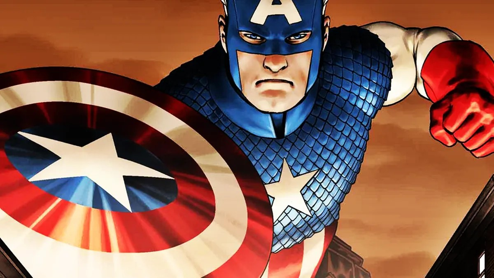
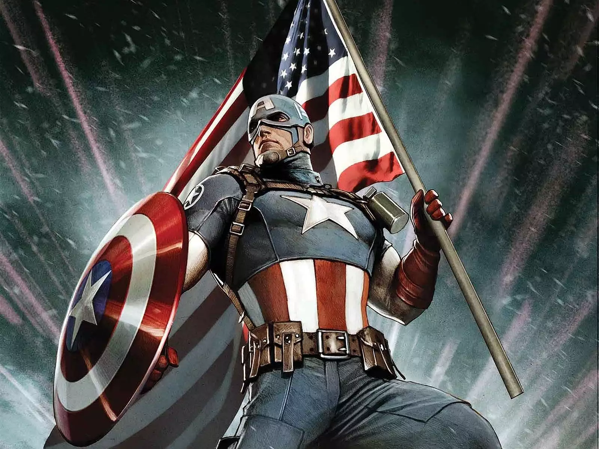
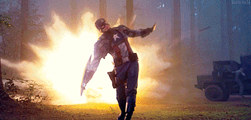

Capitão América é um super-herói de histórias em quadrinhos americanos publicado pela Marvel Comics. Criado por Joe Simon e Jack Kirby, o primeiro personagem apareceu em Captain America Comics # 1 (março de 1941) da Timely Comics, antecessora da Marvel Comics. Capitão América foi concebido como um super-herói patriótico que lutou contra as potências do Eixo na Segunda Guerra Mundial e foi personagem mais popular da Timely Comics durante o período da guerra. O Capitão América veste trajes inspirados na bandeira dos Estados Unidos e está armado com um escudo quase indestrutível que usam para atirar em seus inimigos.
Nascido em 4 de Julho de 1922, filho de um casal pobre de imigrantes irlandeses, Sarah e Joseph Rogers (falecidos em sua adolescência), Steve Rogers era um rapaz com problemas de saúde que desejava, de qualquer forma, participar dos esforços estadunidenses para vencer a Segunda Guerra Mundial. Ao ter seu alistamento recusado por sua saúde debilitada, ele deixa claro estar disposto a fazer qualquer coisa para ajudar na guerra. Esse "qualquer coisa" é tão literal que ele se torna parte de um experimento para a criação de soldados superficiais a alguém: o "projeto supersoldado", que consistia em um soro especial e criado pelo Dr. Joseph Reinstein, anos depois, um retcon diria que esse foi um codinome usado pelo cientista Abraham Erskine. Contudo, na equipe do projeto havia Heinz Kruger, um agente duplo a serviço dos nazistas, que mata Erskine. Como não havia registro escrito da fórmula, essa se perdeu com a morte do cientista, e Steve Rogers acaba se tornando o único daquilo que deveria ser um exército de supersoldados.
  